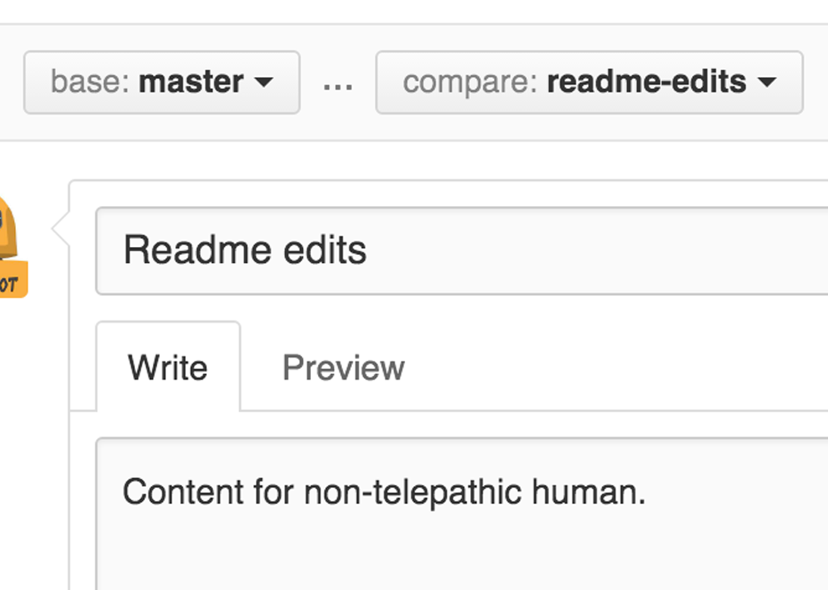

10 minutes de lecture
Le projet Hello World est une tradition de longue date dans la programmation informatique. C'est un exercice simple qui vous permet de commencer à apprendre quelque chose de nouveau. Commençons avec GitHub!
Vous allez apprendre à:
Créer et utiliser un référentiel
Démarrer et gérer une nouvelle branche
Apporter des modifications à un fichier et les transmettre à GitHub en tant que commits
Ouvrir et fusionner une demande de tirage
GitHub est une plateforme d'hébergement de code pour le contrôle de version et la collaboration. Cela vous permet, à vous et aux autres, de travailler ensemble sur des projets de n'importe où.
Ce tutoriel vous apprend les bases de GitHub telles que les référentiels , les branches , les validations et les requêtes d'extraction . Vous allez créer votre propre référentiel Hello World et apprendre le flux de travail Pull Request de GitHub, un moyen populaire de créer et de réviser du code.
Pour compléter ce didacticiel, vous avez besoin d’un compte GitHub.com et d’un accès Internet. Vous n'avez pas besoin de savoir comment coder, utiliser la ligne de commande ou installer Git (le logiciel de contrôle de version sur lequel GitHub est construit).
Conseil: ouvrez ce guide dans une fenêtre (ou un onglet) distincte du navigateur afin de pouvoir le visualiser tout en effectuant les étapes du didacticiel.
Un référentiel est généralement utilisé pour organiser un seul projet. Les référentiels peuvent contenir des dossiers et des fichiers, des images, des vidéos, des feuilles de calcul et des ensembles de données - tout ce dont votre projet a besoin. Nous vous recommandons d'inclure un fichier README ou un fichier contenant des informations sur votre projet. GitHub facilite l'ajout d'un en même temps que vous créez votre nouveau référentiel. Il offre également d'autres options courantes telles qu'un fichier de licence.
Votre référentiel hello-world
peut être un endroit où vous stockez des idées,
des ressources ou même partagez et discutez avec d'autres.
Dans le coin supérieur droit, à côté de votre avatar ou de votre identicon, cliquez sur
puis sélectionnez Nouveau référentiel .
Nommez votre référentiel
hello-world .
Ecrire une courte description.
Sélectionnez Initialiser ce référentiel avec un fichier README .
Cliquez sur Créer un référentiel .
La création de branches est le moyen de travailler simultanément sur différentes versions d’un référentiel.
Par défaut, votre référentiel a une branche
appelée master qui est considérée
comme la branche définitive. Nous utilisons des branches pour
expérimenter et apporter des modifications avant de les
engager à master .
Lorsque vous créez une branche à partir de la
branche principale, vous créez une copie, ou un instantané,
du master tel qu'il était à
ce moment-là. Si quelqu'un d'autre apportait des modifications
à la branche principale pendant que vous travailliez sur votre
branche, vous pouvez récupérer ces mises à jour.
Ce diagramme montre:
La branche master
Une nouvelle branche appelée
feature (car nous effectuons un
«travail de fonctionnalité» sur cette branche)
Le parcours de cette feature
avant sa fusion en master

Avez-vous déjà enregistré différentes versions d'un fichier? Quelque chose comme:
story.txt
story-joe-edit.txt
story-joe-edit-reviewed.txt
Les branches réalisent des objectifs similaires dans les référentiels GitHub.
Ici, chez GitHub, nos développeurs, rédacteurs et
concepteurs utilisent des branches pour conserver les correctifs de
bogues et le fonctionnement des fonctionnalités séparément
de notre branche master (de production).
Lorsqu'un changement est prêt, ils fusionnent leur branche en
master .
Accédez à votre
nouveau référentiel, hello-world
.
Cliquez sur le menu déroulant en haut de la liste de fichiers qui dit branche: maître .
Tapez un nom de branche,
readme-edits , dans la zone de texte de
la nouvelle branche.
Sélectionnez la zone bleue Créer une branche ou appuyez sur «Entrée» sur votre clavier.

Vous avez maintenant deux branches: master
et readme-edits . Ils ont exactement la
même apparence, mais pas pour longtemps! Nous ajouterons
ensuite nos modifications à la nouvelle branche.
Bravo! Vous êtes maintenant dans la vue de code pour votre
branche readme-edits , qui est une copie
de master . Faisons quelques
modifications.
Sur GitHub, les modifications enregistrées sont appelées validations . Chaque commit a un message de commit associé, qui est une description expliquant pourquoi une modification particulière a été apportée. Les messages de validation capturent l'historique de vos modifications afin que les autres contributeurs puissent comprendre ce que vous avez fait et pourquoi.
Cliquez sur le fichier README.md
.
Clique le
icône de crayon dans le coin supérieur droit de la vue du fichier à modifier.
Dans l'éditeur, écrivez un peu sur vous.
Ecrivez un message de validation décrivant vos modifications.
Cliquez sur le bouton Valider les modifications .

Ces modifications seront uniquement apportées au fichier
README de votre branche readme-edits .
Cette branche contient donc un contenu différent de master
.
Belles éditions! Maintenant que vous avez des modifications
dans une branche du master , vous pouvez
ouvrir une demande d'extraction .
Les demandes de tirage sont au cœur de la collaboration sur GitHub. Lorsque vous ouvrez une demande d'extraction , vous proposez vos modifications et demandez à quelqu'un de réviser et d'extraire votre contribution et de la fusionner dans sa branche. Les demandes d' extraction affichent des différences ou des différences entre le contenu des deux branches. Les modifications, additions et soustractions sont indiquées en vert et en rouge.
Dès que vous effectuez un commit, vous pouvez ouvrir une demande d'extraction et démarrer une discussion, même avant la fin du code.
En utilisant le système @mention de GitHub dans votre message de demande d'extraction, vous pouvez demander des informations à des personnes ou à des équipes spécifiques, qu'elles se trouvent dans le couloir ou dans 10 fuseaux horaires plus éloignés.
Vous pouvez même ouvrir des demandes d'extraction dans votre propre référentiel et les fusionner vous-même. C'est un excellent moyen d'apprendre le flux GitHub avant de travailler sur des projets plus importants.
|
Demande de tirage , puis dans la page Demande de tirage , cliquez sur le bouton vert Nouvelle demande de tirage . |
|
|
|
Dans la zone Exemples de comparaisons ,
sélectionnez la branche que vous avez |
|
|
|
Examinez vos modifications dans les différences de la page de comparaison, assurez-vous qu'elles correspondent à ce que vous souhaitez soumettre. |
|
|
|
Lorsque vous êtes convaincu que ce sont les modifications que vous souhaitez soumettre, cliquez sur le gros bouton vert Créer une demande d' extraction. |
|
|
|
Donnez un titre à votre demande d'extraction et décrivez brièvement vos modifications. |
|
 |
Lorsque vous avez terminé avec votre message, cliquez sur Créer une demande d'extraction !
Astuce : vous pouvez utiliser emoji et faire glisser des images et des gifs par glisser / déposer sur les commentaires et les demandes d'extraction.
Dans cette dernière étape, il est temps de
rassembler vos modifications - en fusionnant votre branche de
readme-edits dans la branche principale.
Cliquez sur le bouton de demande
de fusion vert pour fusionner les modifications dans le
master .
Cliquez sur Confirmer la fusion .
Allez-y et supprimez la branche, puisque ses modifications ont été incorporées, avec le bouton Supprimer la branche dans la zone violette.


En complétant ce tutoriel, vous avez appris à créer un projet et à faire une demande de tirage sur GitHub!
Voici ce que vous avez accompli dans ce tutoriel:
Création d'un référentiel open source
Démarrage et gestion d'une nouvelle succursale
Modification d'un fichier et validation de ces modifications dans GitHub
Ouverture et fusion d'une demande d'extraction
Regardez votre profil GitHub et vous verrez vos nouvelles places de contribution !
Pour en savoir plus sur la puissance des demandes d'extraction, nous vous recommandons de lire le Guide de flux GitHub . Vous pouvez également visiter GitHub Explore et vous impliquer dans un projet Open Source.
Conseil : consultez nos autres guides , la chaîne YouTube et la formation à la demande pour en savoir plus sur la mise en route de GitHub.
Dernière mise à jour le 7 avril 2016